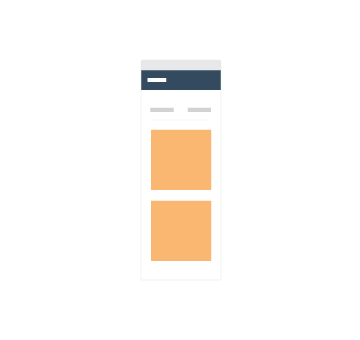
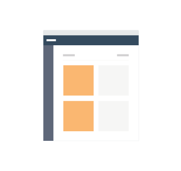
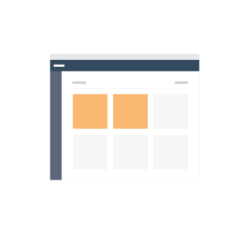

Modular Design Patterns
Mobile

Tablet

Desktop

- 1. Maintain consistancy
- People expect what they see on desktop to be what they see on mobile. Maintain a state of not changing the styling or functional interactions of elements or of the UI / UX between mobile and desktop.
- 2. Designing modules responsively.
- When designing for either desktop, we still think in mobile as the modular constructs that make up a desktop app’s design should be accessible and be able to live independatly as individual pieces that fit a phone.
- 3. Designing responsively to give users the best experience per device.
- When designing modules responsively, groups of modules should be adaptive to give an excellent user experience per device since we treat the browser as a fully collapsable viewport.
- 4. Limitation of functionality is OK
- At the end of the day, users can still expect functional limits driven by technical limitations, Methods decision making in cost effective limitations